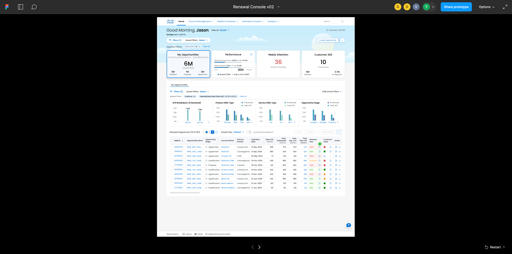
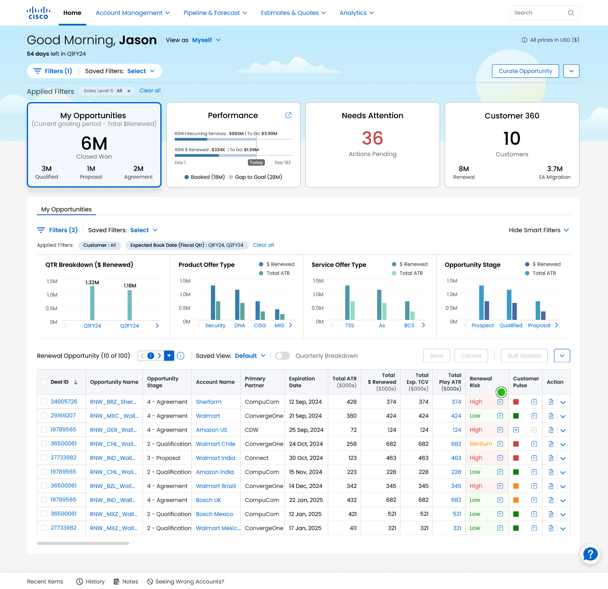
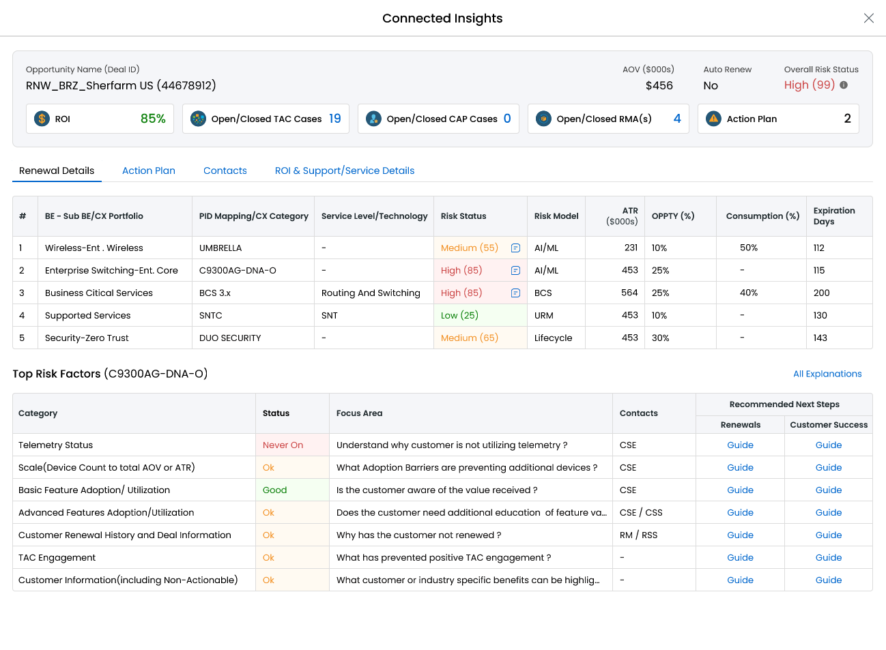
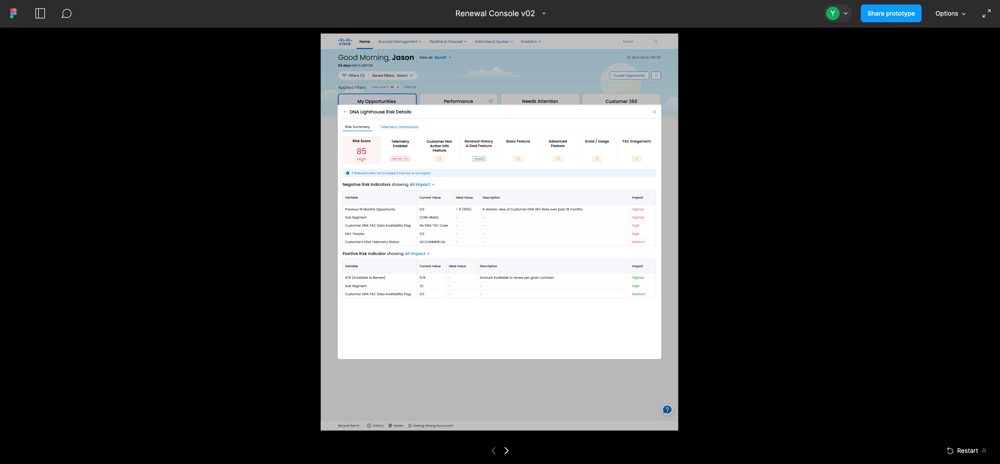
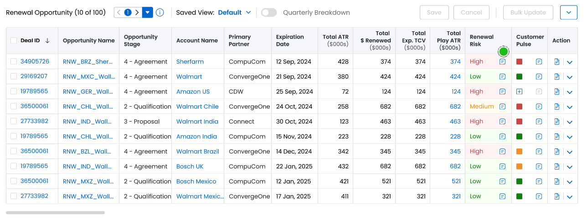

As UX Lead & Research Principal, my challenge wasn't just designing a dashboard — it was overcoming a deep-seated trust barrier, turning a black-box AI number into an actionable, scalable decision-making framework.
Strategic Framing & Business Goals
Business goal: maximize renewal Annual Recurring Revenue (ARR) across enterprise accounts.
The framing: while the initial business directive was simply "increase renewals," foundational user research revealed a major tactical gap — effectively surfacing and predicting renewal risks was the most direct lever to prevent revenue churn and drive ARR growth.

The Core Challenge
As Lead UX Designer & Research Lead, my mission involved overcoming two distinct challenges. First, I negotiated a critical strategic misalignment with the PM regarding feature placement; while the initial scope was limited, I successfully advocated for integrating the Renewal Risk score not only within the Renewals Console but also directly onto the Renewals Console Home — significantly enhancing accessibility and giving users comprehensive visibility across their entire deal portfolio.
However, expanding the product's footprint was only half the battle. The second — and more formidable — challenge was ensuring that once users saw the score, they would actually act on it. Our pre-launch research with 10 global participants (with up to 26 years of tenure at Cisco) revealed a critical systemic issue: users ignored the Renewal Risk column because they defaulted to distrusting the AI model. Instead of acting on the score, they manually bypassed the ecosystem to verify data directly with customers — creating major operational inefficiencies. The design problem was clear: we needed to close the gap between what the model calculated and what a human was willing to believe.
Research Integrity & Evaluative Usability Testing
To validate the high-risk action framework and secure cross-functional buy-in, I independently proposed and spearheaded a comprehensive end-to-end usability testing initiative. Using the interactive prototypes, I owned the entire evaluative research lifecycle.
Findings & Strategic UX Solutions
Finding 1
The friction: users hesitated to act on high-risk flags because they didn't know why the score was generated.
Aiming to build trust in the risk data, I moved beyond raw numbers to prioritize model explainability — designing a framework that details how the model works, displaying specific algorithmic risk drivers combined with collaborative history (e.g., Customer Pulse) for clear visibility across all user roles.
By transforming an isolated number into an explained narrative, we established immediate psychological safety and data credibility.

Finding 2
The friction: in the Top Risk Factors table, users repeatedly tried to click directly on the status labels (High/Medium), which disrupted the console's existing interaction model.
Instead of forcing users to adapt to the UI, I adapted the UI to their mental model — establishing a predictable, strict interactive sequence: Status → Focus Area → Who to Contact → Actionable Guide.
Unified the interface's behavior pattern, drastically lowering cognitive load and eliminating navigation errors during critical workflows.

Finding 3
The friction: Users instinctively clicked the Deal ID or Opportunity Name rather than the designated status bubble to learn more about the Renewal Risk, driven by their deeply ingrained habit of accessing detailed information through traditional console pathways.
Recognizing that users rely heavily on existing navigation habits and cannot immediately adapt to new UI elements, I advocated for an empathetic, friction-free onboarding framework. Rather than forcing users to guess or altering the core data structure, I designed an intuitive, in-system "What's New" quick-guide session triggered upon login. This context-aware guidance directly bridges the gap between familiar navigation paths and newly introduced features without disrupting their active workflows.
Eliminated the learning curve for the new interaction model and significantly accelerated features adoption, while bypassing the need for costly and time-consuming global training sessions.
Finding 4
The friction: the console suffered from fragmented vocabulary across different roles (e.g., "Ok"/"Good" in one section, "High"/"Highest" in another), causing user confusion.
Looking at the platform's long-term scalability, I partnered with a UX researcher to propose a standardized system — prioritizing user-friendly information delivery with inline tooltips and hover-states that explain complex definitions natively.
Avoided costly, disruptive global training sessions by building "vocabulary standardization" directly into the design system component.

Finding 5
The friction: 70% of renewal sellers prioritized their daily workflows using the same three vectors — high ATR (Amount to Renew), earliest expiration date, and Renewal Risk — but had to manually scan the table every time.
Proposed introducing a localized quick-sort algorithm and custom column reordering panel directly inside both the console and the popup, mapping perfectly to users' operational priorities.
Drastically reduced manual data scanning, driving an expected 20% efficiency gain in users' daily workflows.

Cross-Functional Leadership & Stakeholder Alignment
When research revealed that users were missing the popup entirely due to deeply ingrained habits, I faced a major product constraint: no native in-app guidance framework at launch. Instead of letting the user experience suffer, I stepped up to lead a cross-functional strategy with Product Management and the Business Operations team.
The true success of this project lies in its future-proofing — shifting the narrative from "how do we show a popup?" to "how do we design scalability and trust into an AI model?"
The Bigger Picture & Design Scalability
By shifting the narrative from "how do we show a popup?" to "how do we design scalability and trust into an AI model?", this project successfully shipped the initial release with a clear, validated roadmap for subsequent phases.
We successfully established an architectural foundation that allows Cisco's Renewals Console to seamlessly absorb new, complex risk signals over time — without ever breaking the core user experience or requiring expensive user retraining.